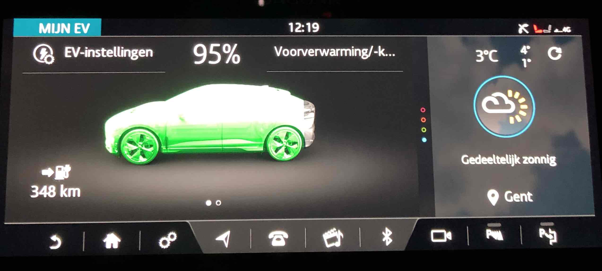
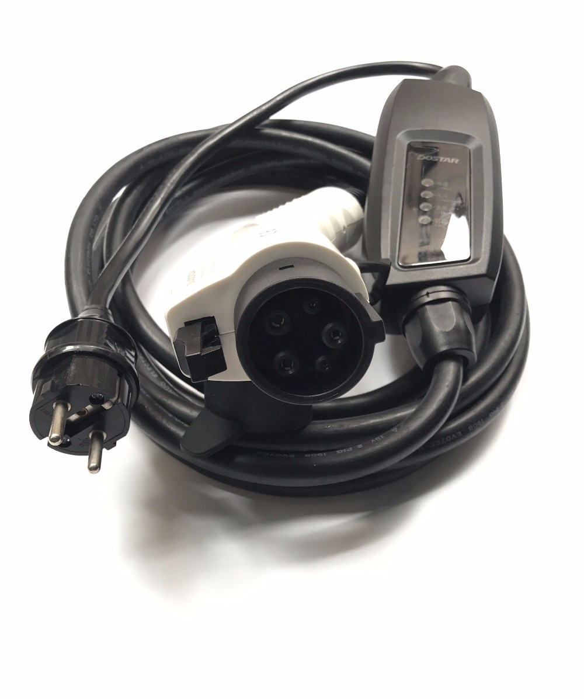
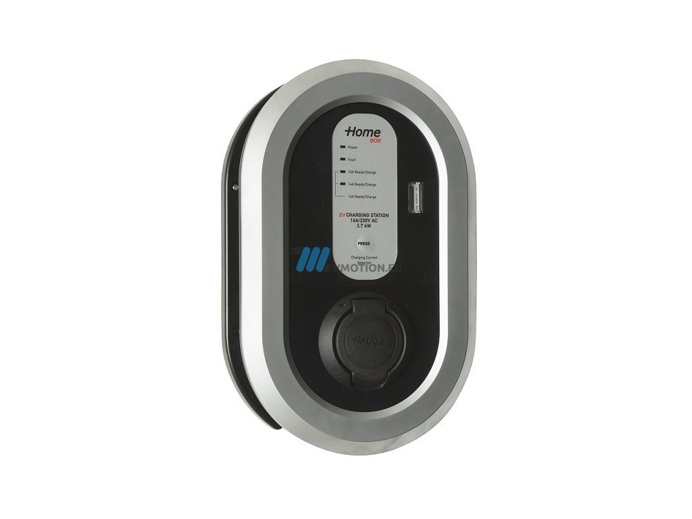

Home - Tags - Charging at home
Electricity is the lifeblood of an electric car, and knowing how, when and where to charge it, is absolutely vital.
The most obvious place to charge it is at home.
How to charge
My car has a 90 kWh battery, and is using about 25 kWh per 100 kilometers driven, so after about 360km, it's done.
So in order to not to get stranded somewhere, it is important to keep the battery charged.

Getting this battery back to 100% after a long drive, or during a long drive will be necessary if 'movement' is the goal ;-)
Charging at home
Mobile home charger via standard 230V AC grid
The car comes with a mobile home charger that works with the standard 230V AC electricity grid that we have at home.
The charger has a 'Type 2' connector on one side (aka 'Mennekes'), and a regular schuko plug on the other side that nicely plugs into a wall socket.

This works great, I used it myself last week. But there is a snag ... it is slow.
A standard home charger draws 10A from a socket; at 230V this gives 2300W (2,3 kW).
The battery can hold 90kWh; so it takes 90kWh / 2,3 kW = 39 hours(!) to fully charge from 0% to 100%.
With an estimated 360km for a full battery, charging via this home charger gives 9km of extra range per hour.
Like I said, slow; but also cheap, home electricity is one of the cheapest sources: 0.25 EU per kWh, or EU 22,5 EU for a full charge (0,0625 EU per km).
Of course, one will (should) never end up at 0% at home, and it is also not needed to go to a full 100% charge in the morning.
The car is parked in the garage during the night for 12h; so as long as I do not drive more than 100km per day, this will work out fine.
Home wallbox charger via standard 230V AC grid
To improve the home charging speed, it is possible to install a dedicated wallbox in your garage or next to your parking spot.

This can be plugged into a 16A 230V socket; or even a 32A 230V socket if available.
The speed gain is impressive:
- 16A x 230V = 3680W; charging at 15km/hour; a full charge in 25 hours
- 32A x 230V = 7360W; charging at 30km/hour; a full charge in 12 hours 30 minutes
- compare to the regular home charger: 10A x 230V = 2300W; charging at 9km/hour; a full charge in 39 hours
A home wallbox is clearly the way to go, so I'm installing it.
The I-Pace model that I have can only charge on a 1-phase AC connection of 230V; with a maximum of 7,36kW.
The newer models support 3-phase AC at 400V also, which allows faster charging speeds if one uses a 3-phase AC connection.
Charging on the road
Of course while 360km of range is plenty for day to day driving, it is not enough when going for a longer trip.
For this charging on the road is needed, and I will tackle this in my next post.
Tags: ev ndr
Links: Permalink -
Previous: Going Electric
© 2020-12-31, Nick De Roeck. All rights reserved.